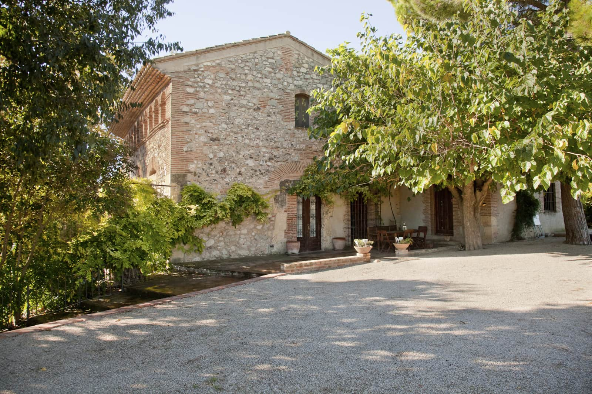
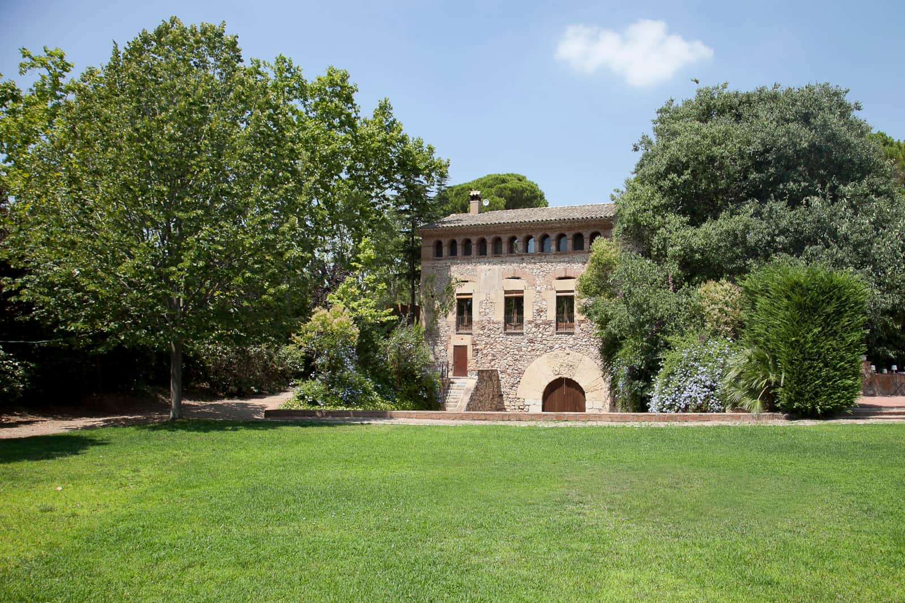

La casa está en Reus, bien conectada con la costa y con el interior. Suficientemente cerca de todo como para improvisar el plan del día sin perder la sensación de estar lejos de las prisas.
Salou y Cambrils, con sus paseos marítimos y calas, quedan a 15–20 minutos en coche. Tarragona capital, a media hora.
El parque temático más visitado de España está a apenas 15 minutos, ideal para una escapada en familia.
El anfiteatro y la muralla romana de Tarragona, Patrimonio de la Humanidad, están a media hora en coche.
Dos de las denominaciones de origen más singulares del vino español, entre viñedos de pizarra, a un corto trayecto.
Poco más de una hora separa la casa del centro de Barcelona, ideal para combinar campo y ciudad en una misma escapada.
A solo 10 minutos, con conexiones directas a varios puntos de Europa. El de Barcelona-El Prat, a una hora.
Cuna del modernismo y de Gaudí, Reus conserva un centro histórico lleno de fachadas modernistas, mercados de proximidad y una escena gastronómica que va del vermut de toda la vida a la cocina de autor.
Recomendamos acercarse al Mercat Central, pasear por la Plaça del Mercadal y dejarse caer por alguna de las bodegas y bares de vermut del centro: la mejor forma de entender el ritmo real de la ciudad.

Te enviamos la ubicación exacta y las indicaciones de llegada al confirmar tu reserva.